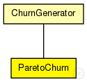

This documentation is released under the Creative Commons license
This documentation is released under the Creative Commons licenseLifetime churn based on shifted pareto distribution
The following diagram shows usage relationships between types. Unresolved types are missing from the diagram. Click here to see the full picture.

The following diagram shows inheritance relationships for this type. Unresolved types are missing from the diagram. Click here to see the full picture.
| ChurnGenerator (simple module) |
ChurnGenerator base module |
| Name | Type | Default value | Description |
|---|---|---|---|
| targetOverlayTerminalNum | int |
number of nodes after init phase |
|
| initPhaseCreationInterval | double |
node creation interval in init phase |
|
| noChurnThreshold | double |
if the lifetimeMean of a specific churn generator exceeds this, NoChurn is used instead |
|
| channelTypes | string |
used (tx) access technologies (from common/channels.ned) |
|
| channelTypesRx | string |
used (rx) access technologies (from common/channels.ned) |
|
| lifetimeMean | double |
mean node lifetime |
|
| deadtimeMean | double |
mean node deadtime |
| Name | Value | Description |
|---|---|---|
| display | i=block/timer | |
| class | ParetoChurn |
// // Lifetime churn based on shifted pareto distribution // simple ParetoChurn extends ChurnGenerator { parameters: @class(ParetoChurn); double lifetimeMean @unit(s); // mean node lifetime double deadtimeMean @unit(s); // mean node deadtime }
This documentation is released under the Creative Commons license